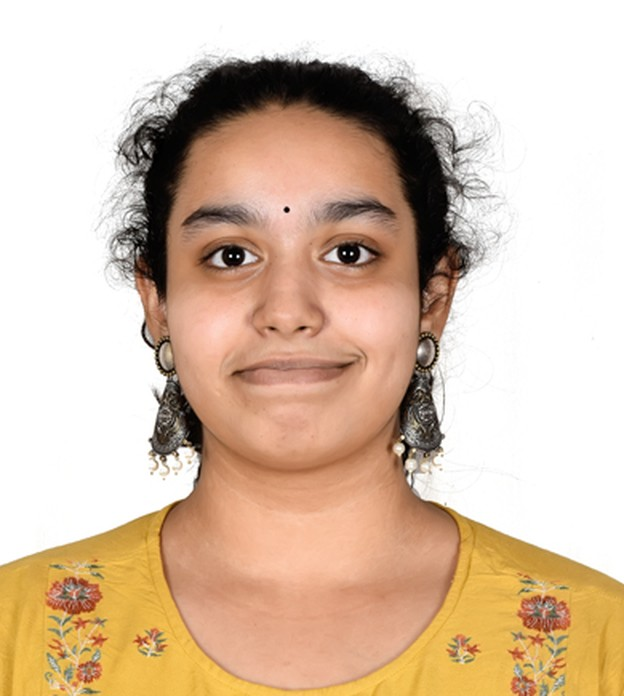

Ananya Penumudi
Embedded & IoT EngineerB.Tech CSE (IoT) · Class of 2027
B.Tech CSE (IoT) student, graduating in 2027, building embedded systems, AI-powered devices and safety-critical software. Industrial trainee at BHEL Bengaluru and author of a systems-engineering thesis on KAVACH, India’s Automatic Train Protection system.

Education
VNR Vignana Jyothi Institute of Engineering & Technology
2023 – 2027 (expected)
B.Tech, Computer Science & Engineering (IoT) · JNTUH · CGPA 8.92 / 10 (till Semester VI)
Sri Chaitanya Junior College
2021 – 2023
Intermediate, Telangana State Board · 97.4%
Bharatiya Vidya Bhavan’s Public School
2021
High School, CBSE · GPA 9.38 / 10
Work Experience
Bharat Heavy Electricals Limited (BHEL), Bengaluru
Jun – Jul 2026
- Trained at the Solar Business Division on manufacturing, production workflows, quality assurance and system integration in a Government of India PSU.
- Studied railway signalling and KAVACH through technical discussions and documentation.
Alfago
Jan 2026
- Built tax-lot based profit-and-loss calculations and backend transaction logic for a tracker covering transaction- and portfolio-level PnL.
Kartgen Infotech LLP
Jan – Apr 2025
- Supported business development and operations: process coordination and stakeholder communication, under Shrivatsa Malviya.
Featured Projects
Elementium AI: virtual chemistry lab
2026
React Three Fiber · FastAPI · MongoDB Atlas · Gemini
GitHub
- Built a 360° 3D lab with drag-and-drop apparatus, real-time titration and colour-change chemistry.
- Added a Gemini-powered tutor and a rule-based engine that catches unsafe or out-of-order steps; the lab notebook fills itself in.
Beyond Collision Prevention: KAVACH thesis
Jun 2026
- Analysed the architecture, operating modes, communication framework and functional safety of India’s Automatic Train Protection system.
- Built an interactive simulator of KAVACH’s modes of operation and a digital twin.
More Projects
Smart AI Wheelchair System
Jan 2026
- Vision-based obstacle detection with automatic braking; GPS geofencing, caregiver alerts and sensor fusion across camera, IMU and proximity sensors.
AI-Enhanced Secure Data Wiping Platform
Nov 2025
AI + cybersecurity · team project
GitHub- Binary-overwrite data sanitisation with cryptographic verification of every wipe and AI-based anomaly detection.
Syncope: fall detection & alert system
Aug 2025
- A wearable that detects falls from motion-sensor data and alerts caregivers automatically.
FocusFlow: ADHD-friendly productivity platform
Apr 2025
- Mood tracking, journaling, facial-expression analysis and gamified focus tools.
Auralyn: emotional-wellness wearable
2025 – now
IoT + AI + healthcare · in design
- Designing an ESP32-S3 + BLE wearable that pairs biometric sensing with mood analysis, with apps for the wearer, therapist and family.
Earlier web projects
2023 – 2024
- Ideavoid: startup-idea validation platform with peer feedback and market-viability assessment.
- Cheugy: wellness app for stress management and self-care. GitHub
- Syndicate: gamified learning platform built around films, documentaries, quizzes and discussions.
Technical Skills
IoT & embeddedArduino, ESP32, sensor integration (SPI, I2C, PWM), BLE, GPS, GSM, accelerometers
ProgrammingC, C++, Python, Java, JavaScript, R, HTML, CSS, data structures & algorithms
AI & dataComputer vision, edge inference, mood detection, anomaly detection, Tableau
Systems engineeringRequirements analysis, functional safety, verification & validation, system architecture, traceability
Web, cloud & toolsReact Three Fiber, FastAPI, MongoDB, MySQL, AWS, CI/CD, Figma, AutoCAD, StarUML
LanguagesEnglish, Hindi, Telugu
Certifications
- DevOps with Real-Time Practical Exposure, Brainovision (AICTE approved), VNRVJIET · Jul – Nov 2025
- Tableau Certified Data Analyst Training, Udemy (59 hours) · Jun 2024 · Certificate
- RoboJAM Robotics Workshop, Convergence 2K23, VNRVJIET · Dec 2023
Awards & Activities
- 2nd Prize, IDEATHON 2023, VNRVJIET · Certificate
- Smart India Hackathon 2025: solution design, prototyping and technical documentation
- 24-hour Hackathon, Convergence 2025, VNRVJIET · Certificate
- 24-hour Hackathon DEMUX 2024, BVRIT · Certificate
- National Conclave 2025, CBIT · Certificate
- Member, Computer Society of India (VNRVJIET chapter) and Art of Living Cultural Club, 2023 – present